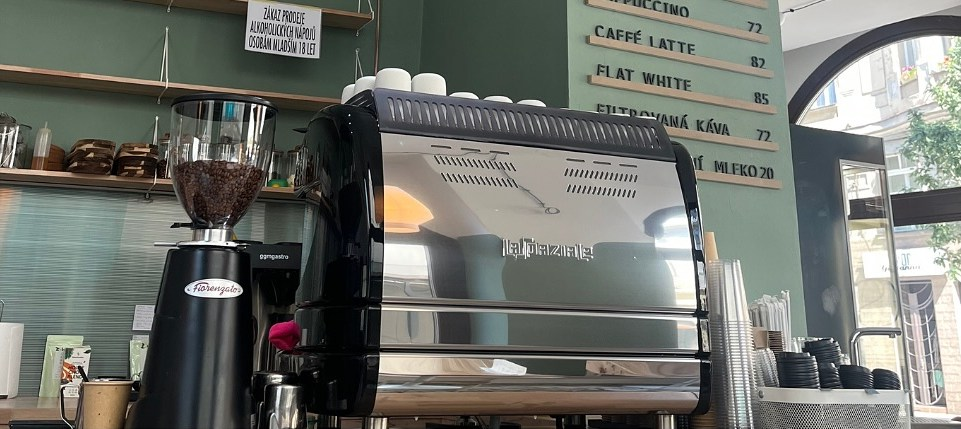
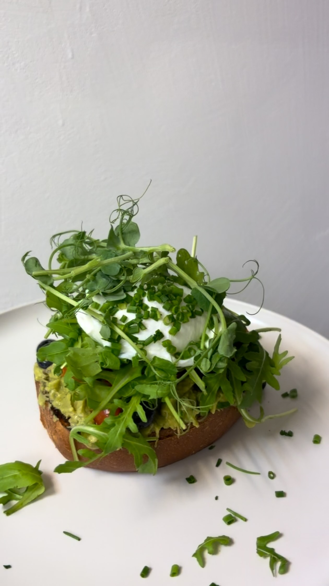
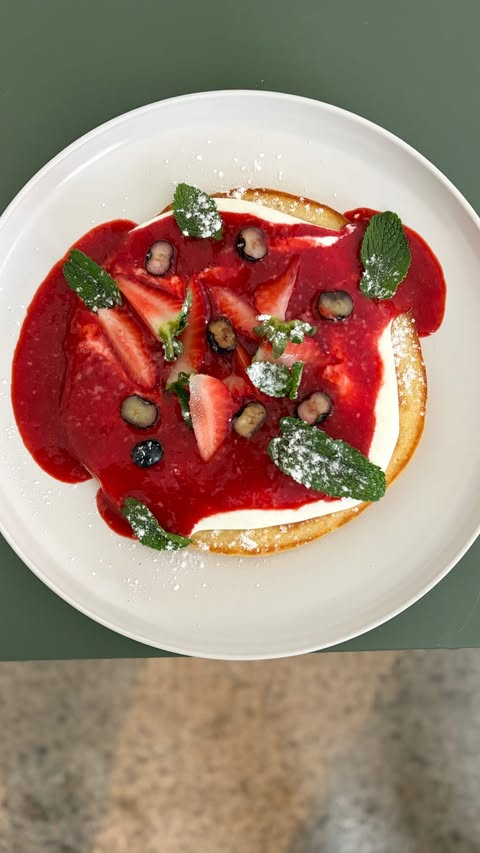
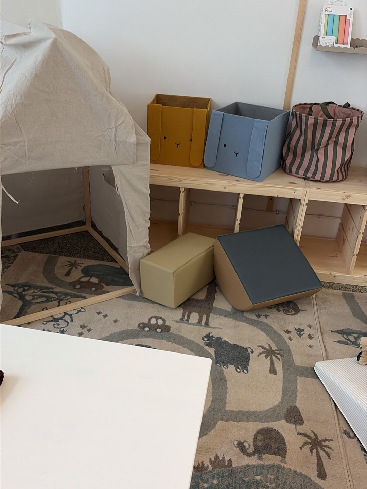
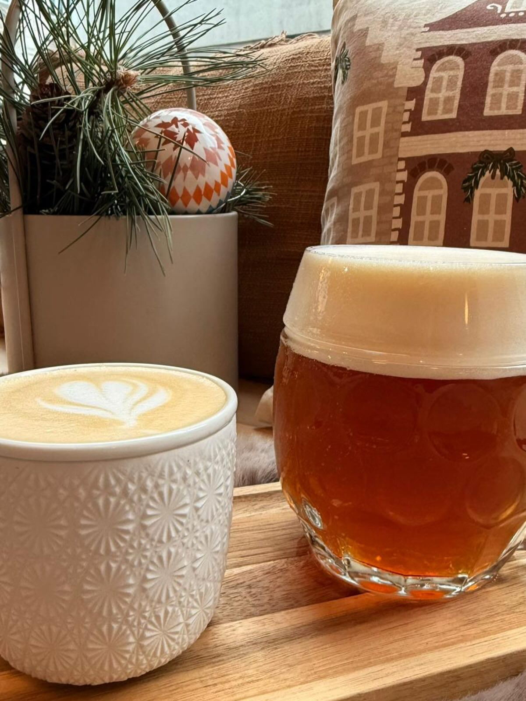

01
Výběrová káva
Kvalita je pro nás na prvním místě, a proto na mlýnku máme kávu z českých pražíren: Mia Coffee, rodinnou pražírnu ze severu Čech, a CHROAST z Hradce Králové.
Hledáme posilu do týmu
Barista a obsluha · výpomoc do kuchyně

Káva, snídaně a dorty kousek od OC Laso
Prosvětlená kavárna na ulici 28. října. Na mlýnku máme kávu z českých pražíren, v kuchyni snídaně pro každého a vzadu dětský koutek.
Po–Pá 7:30–18:30, So–Ne 9:00–18:30
Kvalita je pro nás na prvním místě, a proto na mlýnku máme kávu z českých pražíren: Mia Coffee, rodinnou pražírnu ze severu Čech, a CHROAST z Hradce Králové.

Slané, sladké, lehké i vydatné. Vybere si každý: vege, maso i bezlepek.

Ke kávě vždycky něco dobrého na zub. Dezerty pečeme sami a lívanec z podmáslí s ovocem patří k nejoblíbenějším snídaním.

V zadní části kavárny je koutek se stanem a hračkami, takže si kávu v klidu vychutnají i rodiče s dětmi.

Kromě kávy u nás načepujeme i pivo, nabízíme drinky a čas od času i sezónní speciály.